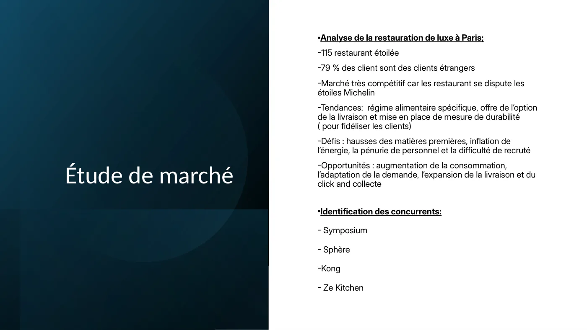

Marketing et international · BC3 · BUT 1
Niveau 1 : Participer à la démarche marketing
Niveau attendu en première année : novice. 4 apprentissages critiques, chacun avec ce qu’il recouvre, la situation où je l’ai travaillé et mes traces.
Apprentissages critiques du niveau 1
- AC13.01
Analyser l’influence de l’environnement sur le fonctionnement du marché
Mesurer comment les facteurs politiques, économiques, sociaux, technologiques, écologiques et légaux (PESTEL) transforment l’offre et la demande sur un marché.
En économie, j’ai étudié les structures de marché, du monopole à la concurrence pure et parfaite et ses cinq conditions. Un devoir d’économie et développement durable m’a fait bâtir la stratégie d’une marque de vêtements en matières recyclées : la fast fashion a doublé la production de vêtements en quinze ans, d’où le choix de l’éco-conception et de l’économie circulaire, et 63 % des 18-24 ans suivent des créateurs de contenu, d’où une stratégie d’influence. Pour le projet, notre SWOT a recensé forces, faiblesses, opportunités et menaces, parmi lesquelles la mise en place d’un stand et la collaboration avec des influenceurs.
TracesDevoir sur la stratégie marketing et l’éco-conceptionAnalyse SWOT du projetCours d’économie

Analyse SWOT du projet « Soutenons la Libye ». - AC13.02
Identifier les acteurs du marché : producteurs/fabricants, concurrents, distributeurs, consommateurs, influenceurs, pour déterminer les objectifs de la stratégie marketing
Recenser ceux qui agissent sur le marché et le rôle de chacun, pour en déduire ce que la stratégie marketing doit viser.
Pour le projet, nous avons identifié nos partenaires, l’UNICEF, l’IUT, la mairie de Charleville-Mézières, GACO Promo et Metro, nos concurrents, c’est-à-dire les autres projets solidaires organisés les mêmes jours, et notre cible, les étudiants du campus. Pour nous démarquer, un stand tenu de 12 h à 17 h à la Maison du campus a fait inscrire deux équipes de plus et atteindre les 16 joueurs. Pour mon projet de restaurant, j’ai analysé la restauration de luxe à Paris : 115 restaurants étoilés, 79 % de clientèle étrangère et une concurrence serrée pour les étoiles Michelin.
TracesRapport de projet, analyse de la concurrencePDFDossier de création du restaurant L’ALP (individuel)PDF

Étude de marché du restaurant L’ALP : la restauration de luxe à Paris et ses concurrents. - AC13.03
Identifier les composantes du mix produit – prix – distribution – communication
Décomposer l’offre d’une entreprise selon les 4P et comprendre comment ces choix se répondent les uns aux autres.
J’ai décomposé le mix de notre projet : le produit, une cagnotte UNICEF et un tournoi ; le prix, 8 € d’inscription et des dons possibles dès 5 € ; la distribution, la Maison du campus et la cagnotte en ligne ; la communication, Instagram, Facebook, TikTok, flyers, passages en classe et mails. Au premier semestre, avec trois camarades, j’avais analysé la Porsche 911 Carrera S : forces et faiblesses, messages clés de sa proposition de valeur, publicité, puis une proposition de valeur plus responsable. Mon dossier de restaurant couvre lui aussi les quatre volets, de la carte au plan de tarification.
TracesPrésentation Porsche 911 Carrera S (groupe)Rapport de projet, mix marketingPDFDossier de création du restaurant L’ALP (individuel)PDF

Analyse de la Porsche 911 Carrera S : points forts et points faibles. - AC13.04
Utiliser les outils de l’étude de marché par la recherche documentaire et la mise en œuvre de techniques d’exploration quantitatives et qualitatives
Mener une étude de marché de bout en bout : recherche documentaire, questionnaire, entretiens, puis traitement et lecture des résultats.
En marketing d’étude, j’ai suivi le cycle complet d’un questionnaire, du besoin à la décision, et pratiqué le logiciel Sphinx sur une enquête automobile. J’ai rédigé un guide d’entretien semi-directif pour une étude qualitative sur la livraison de repas à domicile, avec ses thèmes, ses questions principales et ses relances. Pour le projet, la recherche documentaire a nourri notre argumentaire avec les chiffres de l’UNICEF repris sur l’affiche, et un questionnaire de satisfaction a suivi le tournoi.
Avec le recul, ce questionnaire est arrivé trop tard : rédigé deux jours après le tournoi, il n’a été envoyé que plusieurs semaines plus tard. La leçon : le préparer avant l’événement.
TracesGuide d’entretien semi-directifPDFTP SphinxQuestionnaire de satisfaction du tournoi

Guide d’entretien semi-directif sur la livraison de repas à domicile.

Bilan du niveau 1
Points forts : décomposer une offre, repérer les acteurs d’un marché et utiliser les deux familles d’études, quantitative avec Sphinx et qualitative avec le guide d’entretien.
À renforcer : définir la cible avant de communiquer et choisir les réseaux sociaux en fonction d’elle, comme le projet l’a montré.
Pour la suite : au niveau 2, passer du diagnostic à la stratégie : segmentation, ciblage, positionnement et mix complet.